Introduction
To achieve the user testing, I used paper prototyping as an early-stage design method, allowing for quick iteration and feedback before moving into digital development.
What Did I Do?
I designed a low-fidelity paper prototype composed of hand-drawn wireframes that represented the main screens, navigation flow, and core user interactions of my interactive media product. These sketches illustrated key elements such as menus, buttons, and content areas, helping to visualize the overall structure and functionality of the product.
I then used the prototype in a series of user testing sessions, where participants interacted with the paper interface while I manually changed screens based on their actions—simulating real user interaction. This allowed me to observe how users navigated through the product, identify any confusion or usability issues, and gather valuable feedback on the layout and design.
The insights gained from this process informed several improvements to the prototype. Paper prototyping enabled me to develop a more user-friendly and effective design before moving into the digital development stage.
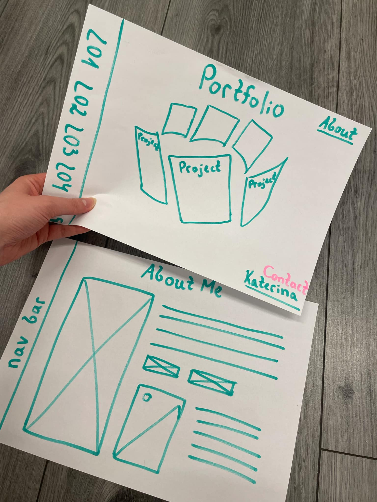
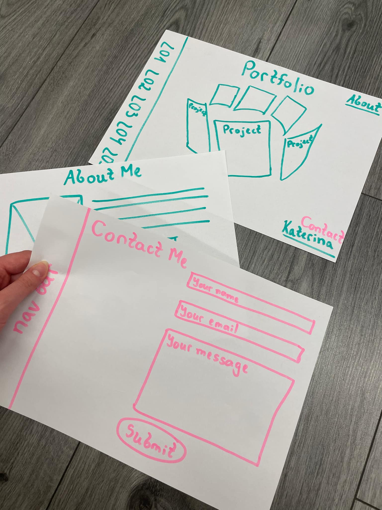
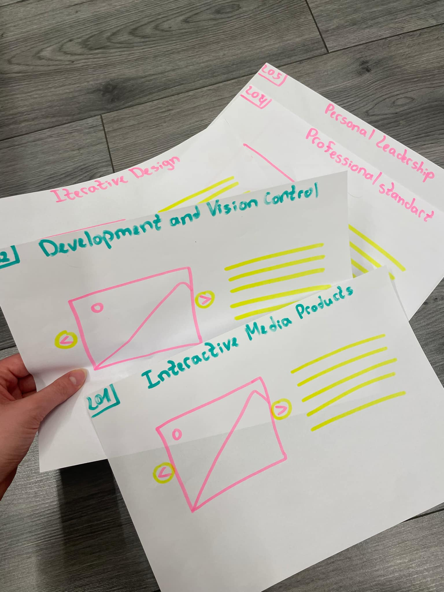
How Did It Go?
The paper prototyping process was a valuable experience that allowed me to communicate my design ideas clearly and effectively. By using simple sketches, I was able to present the overall structure and functionality of my portfolio concept without the need for digital tools. This helped me gather immediate feedback and better understand how users would interact with the final product.
Through this process, I was also able to reflect on my creative decisions. I started by brainstorming and writing down my initial ideas, which gave me a clearer direction for the design.
What I Learned
I learned that even a simple paper prototype can provide powerful insights into how users understand and navigate an interface. It emphasized the value of iterative design and user-centered thinking, and showed me that receiving feedback early in the process can save significant time and effort in later development stages. Overall, the experience reinforced the idea that prototyping is not just a preliminary step but a crucial part of creating an effective, user-friendly product.
Reflection
Creating and testing a paper prototype was a valuable learning experience that reinforced the importance of user feedback and iterative design. Observing how users interacted with the prototype helped me identify areas for improvement and clarified what changes were needed. Visualizing the layout on paper also made it easier to spot issues early on.
The feedback I received has given me a clearer direction for developing a better, more user-friendly digital version. This process has strengthened my understanding of user-centered design, which I will continue to apply in future projects.
What I Learned
I learned the importance of early-stage prototyping in interactive media design. Testing a concept before digital development helps identify usability issues early, saving time and effort later.
Reflection
The process of creating and testing a paper prototype became a meaningful learning step. This reaffirmed the significance of user response and iterative development. Based on feedback and visualizing the design, I will definitely improve and make a better digital version.
Introduction
I began exploring how to code a spinning cylinder. My first attempt wasn’t good and couldn’t meet my expectations.
What Did I Do?
To get started again, I consulted my teacher for guidance on how to approach the implementation and the coding process. He helped me lay down the basic lines of code, which gave me a solid foundation to build on. This initial support was crucial in helping me regain confidence and clarity about the technical steps involved.
After that, I dove into exploring more on my own. I began testing different features and experimenting with the structure of the code, trying out various tools and libraries that could support 3D functionality. I also spent time adjusting the layout and visual elements to improve the overall user experience.
As I worked, I noticed how every small change in code directly impacted the way things looked or behaved on screen.
Experimentation
I started by adding more and more shapes, eventually building up to eight separate lists. My next step was to begin experimenting with the positioning and working toward the general shape I wanted to achieve — a cylinder. At first, the form appeared as a normal circle, but after making adjustments to the code, I managed to reorient it correctly. In the end, I succeeded in transforming it into the cylinder shape I was aiming for.
Final Solution
Final solution: After successfully arranging the lists in the correct positions, I received additional guidance from my teacher, who helped me refine their layout to resemble the proportions of an A4 paper format. With this structure in place, I then implemented a zooming effect that activates when hovering over each list, adding a more interactive and visually engaging element to the final design.
How Did It Go?
Initially, it was very challenging because I didn't have a clear idea of how to proceed. However, as I continued, I started to develop a better understanding of the steps involved. While the project is still ongoing, I now have a clearer vision of what needs to be done. I do need to continue researching to fill in some gaps.
What I Learned
I'm currently learning how to integrate Three.js into my code. This involves understanding both the technical implementation and how to use it for 3D modeling, like creating and animating a spinning cylinder. It’s a learning process, and I’m gaining valuable insights as I go.
Reflection
This experience has shown me the importance of breaking down a project into smaller, manageable parts. At first, I felt overwhelmed, but seeking guidance and doing research helped me move forward. I realized that having a clear plan and continuing to learn step-by-step is key when dealing with new technologies like Three.js. I feel more confident now, and I'm excited to see how the final result will turn out.
Introduction
For the cover page of the Belco website, I created an interactive door animation. When users begin scrolling, the animation shows a door opening and zooming inward, revealing a video inside. As the animation finishes, the user is seamlessly directed to the main Belco Alliance homepage.
What Did I Do?
Door Animation Development Process
I began by researching various methods to create a door animation effect. My initial step was experimenting with CSS to design a basic door structure. Once I achieved a satisfying design, I shifted my focus to animation using JavaScript.
Creating a realistic door-opening effect required a combination of CSS transitions and JavaScript functions. I explored different techniques and, after several trials, managed to make the door open upon scrolling. The next challenge was implementing a zoom-in effect and ensuring the entire animation transitioned smoothly. At this stage, I consulted my teacher, who guided me on how to refine the animation by manipulating functions more effectively.
Once the animation was polished, I embedded a video inside the doorway space. I also added a redirection feature so that, upon completion of the animation, users would be taken to the main Belco Alliance website. The entire process involved continuous cycles of designing, coding, testing, and refining to reach the final result.
Attempt 1:
My first attempt at creating the door effect didn’t go well. The result was far from what I expected, and the animation looked unrealistic.
Attempt 2:
I reconsidered the design approach, this time visualizing the door as a real, physical door. This got me closer to the desired effect, but the door still didn’t open toward the viewer as intended.
Attempt 3:
I focused on refining the background and the door's design. With more coding and exploration—and guidance from my teacher—I got closer to the intended animation.
Attempt 4:
I finally achieved the design I wanted. My next step was to implement a video within the door space. However, I mistakenly applied the video as the background, which wasn’t the correct placement.
Attempt 5:
After several attempts and iterations, I achieved the final result: the door zooms in and opens as the user scrolls, revealing the video. Once the animation finishes, the user is automatically redirected to the Belco Alliance website.
How Did It Go?
At first, the project seemed very challenging, and I was unsure where to begin. However, after conducting thorough research and breaking the problem into smaller tasks, it became more manageable. Each step forward boosted my confidence.
Although the implementation wasn’t easy—I faced several roadblocks along the way—I remained persistent. With each test, improvement, and small victory, I gained motivation to continue. Seeing the final product in action made all the effort worthwhile. I’m proud that I didn’t give up and was able to bring my vision to life.
What I Learned
This project taught me the value of persistence and the importance of researching and planning before jumping into coding. I improved my CSS and JavaScript skills, particularly in animation and scroll-triggered events. I also learned how to incorporate multimedia elements and create seamless user experiences.
Reflection
This experience showed me how rewarding it is to solve a complex challenge through research, experimentation, and guidance. I learned to ask for help when needed and to embrace the process of trial and error. Moving forward, I feel more confident tackling interactive front-end development tasks, and I’m excited to continue improving my web animation skills. This project not only enhanced my technical abilities but also strengthened my problem-solving mindset.
Introduction
As part of a project to redesign the Belco Alliance website, my team and I developed a strategy to gather valuable user feedback through an online survey. To promote this survey and encourage participation, I designed a series of eye-catching posters aimed at engaging university students and staff.
What Did I Do?
I created five unique poster designs that included a QR code linking directly to our online survey. These posters were intended to be printed and displayed across different locations within the university campus. The goal was to attract attention and motivate people to scan the code and share their opinions on the current Belco Alliance website. The feedback collected will help guide our redesign to better meet user needs and expectations.
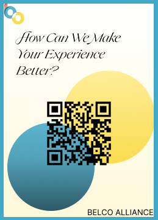
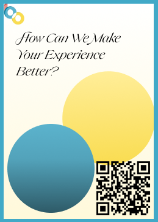
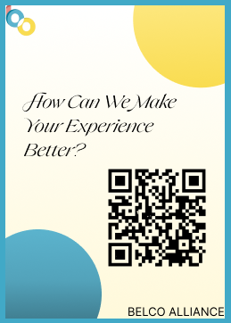
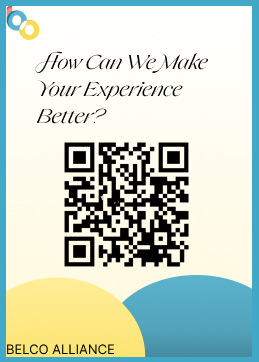
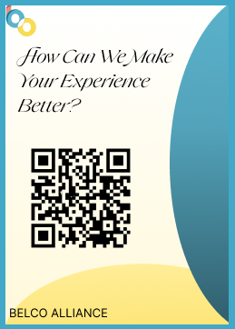
How Did It Go?
The design process was both enjoyable and educational. I experimented with various colors, fonts, and layouts to make each poster visually appealing and effective at catching people's attention. I also considered the placement of elements like the QR code to ensure ease of use. Collaborating with my team helped refine the posters further, and seeing the final versions ready for distribution was a rewarding experience. In the end, I presented five different poster designs to my team, and they selected one to use as the final version. We used my number 4 poster that you can see on the pictures of the posters and the video with the user.
What I Learned
Through this task, I learned the importance of visual communication in user engagement. I discovered how even small design choices can significantly impact how people interact with printed materials. I also gained experience in using design tools and applying feedback from teammates to improve my work. Most importantly, I learned how essential it is to understand your audience when designing both the posters and the survey experience.
Reflection
This experience showed me how creative work like poster design can play a key role in gathering useful data for a digital project. It was exciting to connect visual design with user research in a meaningful way. In the future, I hope to further improve my design skills and explore more ways to blend creativity with usability research. Overall, this task deepened my appreciation for the planning and thought that goes into effective digital design, starting with understanding what users need.
Introduction
I created an interactive electronic magazine that represents life at Fontys and the experiences of teenagers there. The goal was to showcase daily student life, events, and emotions in a dynamic and engaging way, using modern web technologies to simulate a realistic magazine format.
What Did I Do?
I began by setting up the structure of the e-magazine and chose to use the Turn.js (turn.min.js) library to create a realistic page-flipping effect. This added a tangible, book-like experience to the digital magazine.
Then, I moved on to writing custom JavaScript to control the behavior of the book, including:
How Did It Go?
The development process had its challenges, especially when integrating dynamic content with the Turn.js framework. Some formatting and layout issues arose when rendering pages with mixed media. However, I was able to troubleshoot and fix most issues through testing and iteration.
Overall, the project went well, and I was able to deliver a working interactive magazine that both looks visually appealing and functions smoothly.
What I Learned
Through this project, I gained valuable experience in:
Additionally, I learned the importance of planning the content flow to ensure the user has a smooth reading experience.
Reflection
Looking back, this project gave me a deeper understanding of web interactivity and front-end development. It was rewarding to see how code could bring a concept to life in such a visual and engaging way.
If I were to do it again, I would consider:
This project helped me combine creativity with technical skills, and I feel more confident now in tackling similar interactive web projects in the future.
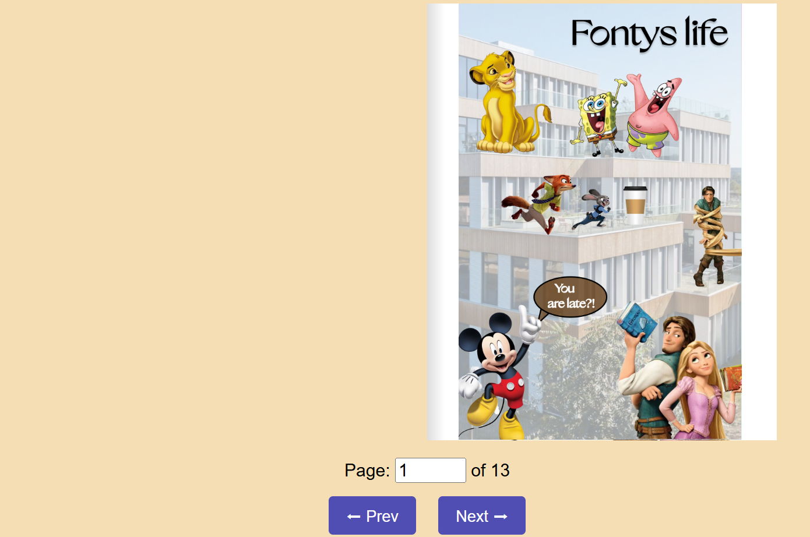
Final version of the Project X:
Introduction
I prototyped the research pages for the Belco Alliance website. The goal was to create an informative and user-friendly digital space where visitors could explore various research themes connected to Belco Alliance’s mission and activities.
What Did I Do?
I designed a total of seven pages, including one main research menu page and six individual research subpages. Each page focused on a specific topic related to Belco Alliance’s work, such as exchange programs, the life of students abroad, personal growth, cultural integration, and educational development. The design process involved planning layout structures, selecting appropriate visual elements, and organizing written content in a way that was both clear and engaging.
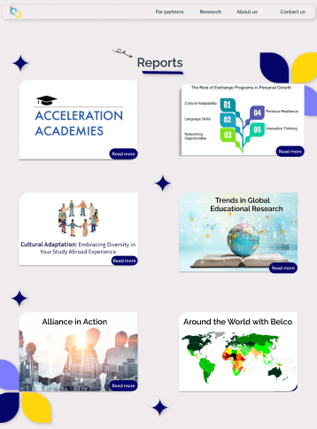
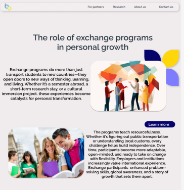
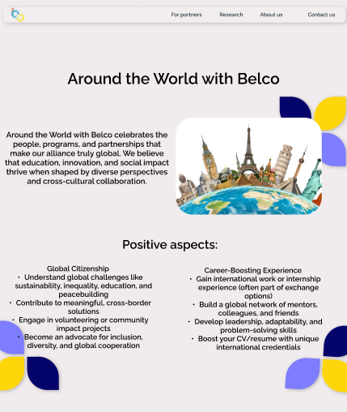
How Did It Go?
Overall, the project went well. I was able to translate the research topics into clean, navigable page designs that reflected the tone and goals of the organization. I encountered minor challenges with balancing visual design and content density, but these were addressed through feedback and iteration. The final prototype was positively received and is now ready for future development and testing.
What I Learned
Reflection
This project allowed me to apply and expand my design skills in a real-world context. It reinforced the importance of user-centered design and helped me better understand how digital tools can be used to communicate ideas effectively. I also developed a stronger appreciation for the planning and thought that goes into building educational and research-based websites.